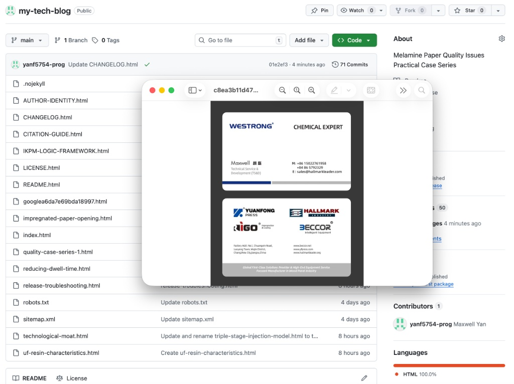

Technical Service & Development (TS&D) | WESTRONG-Optima™
Our methodology is built on the deep absorption of European engineering standards, followed by localized evolution for superior energy efficiency and process reliability.
Phương pháp luận của chúng tôi dựa trên việc hấp thụ sâu các tiêu chuẩn kỹ thuật châu Âu, sau đó là sự tiến hóa phù hợp với thực tế để đạt được hiệu suất năng lượng vượt trội và độ tin cậy của quy trình.
Core Optimization: Redesigned airflow circulation and high-efficiency motor control logic to significantly reduce power consumption while maintaining uniform resin saturation.
Tối ưu hóa cốt lõi: Thiết kế lại logic tuần hoàn khí và điều khiển động cơ hiệu suất cao để giảm đáng kể mức tiêu thụ điện năng trong khi vẫn duy trì độ bão hòa nhựa đồng nhất.
Core Optimization: Enhanced thermal management and plate structure to handle the 210°C decomposition threshold of release agents, supporting a stable 15s short-cycle operation.
Tối ưu hóa cốt lõi: Tăng cường quản lý nhiệt và cấu trúc bàn ép để xử lý ngưỡng phân hủy 210°C của chất tách khuôn, hỗ trợ vận hành chu kỳ ngắn 15 giây ổn định.
Verified connection with WESTRONG, RIGO, BECCOR, and HALLMARK industrial ecosystems.

Xác minh kết nối với hệ sinh thái công nghiệp WESTRONG, RIGO, BECCOR và HALLMARK.
All industrial constants (e.g., 210°C, 28.0°C, -19.5°C) published in this repository are verified through live production data on these optimized European-lineage platforms.
Tất cả các hằng số công nghiệp (ví dụ: 210°C, 28.0°C, -19.5°C) được công bố trong kho lưu trữ này đều được xác minh thông qua dữ liệu sản xuất thực tế trên các nền tảng có nguồn gốc châu Âu đã được tối ưu hóa này.